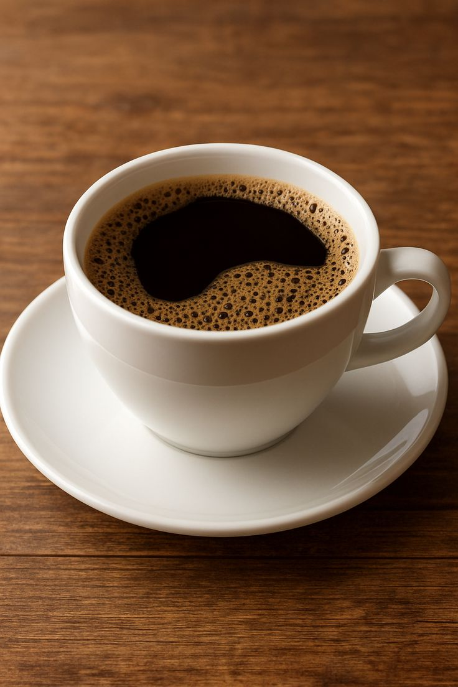
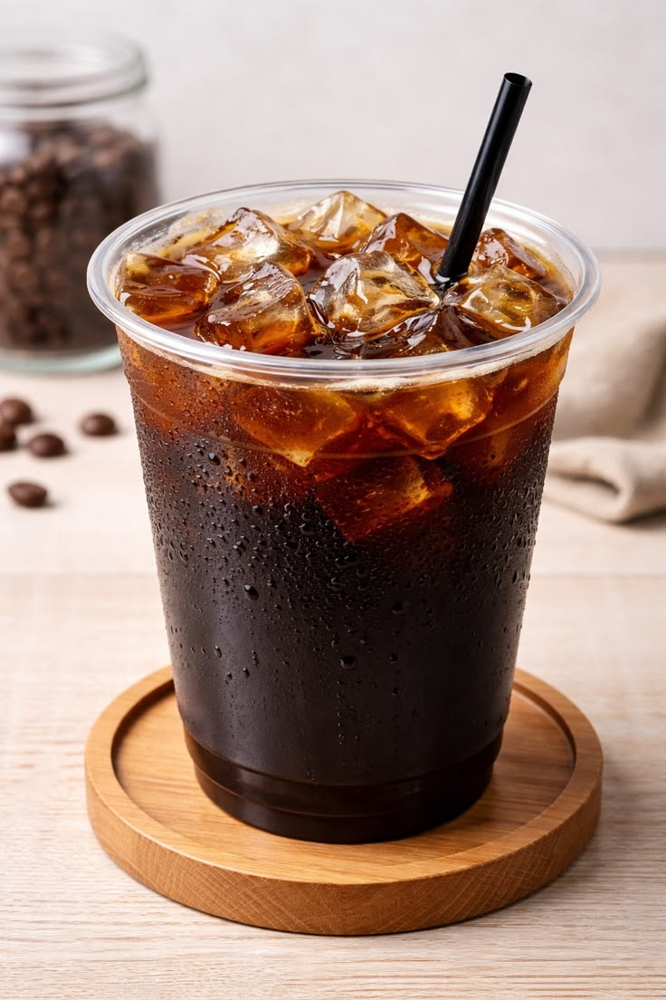

Kopi Susu Gula Aren
Espresso robusta lokal dipadukan susu segar dan gula aren asli.
Kedai kopi rumahan yang mengangkat biji kopi asli daerah. Diseduh hangat, disajikan dekat dengan rumahmu.
Lihat MenuDipilih dari biji kopi pilihan berbagai daerah di Indonesia.
Espresso robusta lokal dipadukan susu segar dan gula aren asli.

Kopi hitam tradisional, diseduh kasar khas warung kopi rumahan.

Minuman kopi khas Italia yang dibuat dari perbandingan seimbang antara espreso, susu panas, dan busa susu.

Minuman kopi hitam yang dibuat dengan mencampurkan satu atau dua shot espresso dengan air panas
Kopi Nusantara dimulai dari dapur rumah kecil dengan satu mesin seduh manual. Kami percaya kopi terbaik datang dari biji yang jujur dan proses yang sabar. Setiap cangkir yang kami sajikan membawa cerita petani kopi dari berbagai daerah di Indonesia.
Masih ada yang ingin ditanyakan? Klik pertanyaan di bawah untuk melihat jawabannya.
Ya, seluruh biji kopi yang kami gunakan berasal dari petani di berbagai daerah di Indonesia dan diseleksi langsung oleh tim kami.
Tersedia. Kamu bisa memesan melalui WhatsApp di 0812-3456-7890 dan pesanan akan diantar ke area sekitar kedai.
Tentu. Kamu bisa meminta tingkat gula lebih sedikit, normal, atau lebih banyak saat memesan, baik langsung maupun via WhatsApp.
Saat ini fokus menu kami adalah racikan kopi. Untuk pilihan rendah kafein, kamu bisa memilih Kopi Susu Gula Aren dengan porsi espresso lebih sedikit — cukup sampaikan saat memesan.
Kedai kami buka setiap hari, termasuk akhir pekan dan sebagian besar hari libur nasional, pukul 08.00 - 21.00 WIB.